Link: https://www.youtube.com/watch?v=pz7QD2GPBlE
Danial focuses on the practical challenges and solutions in implementing causal effect estimation in business settings, particularly in finance and banking. The speaker emphasizes the gap between theoretical frameworks and real-world applications, sharing lessons learned from actual implementations.
0. Intro
The author aim to shed some light on the practical setting and challenges of causal inference. Causal analysis goes further than predicting an outcome, all the way to influence it.
1. Practical Use Cases
- Effect estimation:
- Marketing campaign effectiveness evaluation (on client/product acquisition and retention);
- Assessment of free financial consultation services’ value (on revenue/NPS);
- Other applications [Out of scope]:
- Root Cause Analysis: To what factor(s) the estimated effect can be attributed;
- What if analysis: What is the result of a counterfactual scenario.
Eg.: the impact measurement of credit lines on customer retention. The primary challenge is moving from theoretical frameworks to practical business applications.
2. The Gold Standard vs. Reality
- While A/B testing (randomized experiments) is considered the gold standard, it’s often impractical or impossible in real business settings;
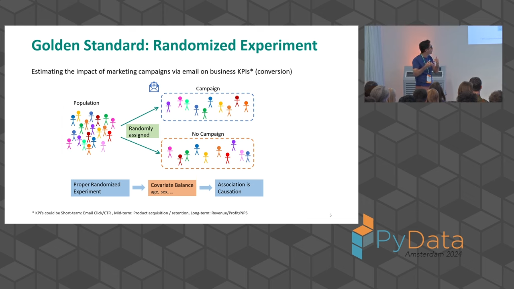
- Common obstacles include:
- Marketers forgetting to implement proper randomization;
- Cost and business constraints;
- Ethical considerations;
- Client non-compliance;
- Limited data availability.
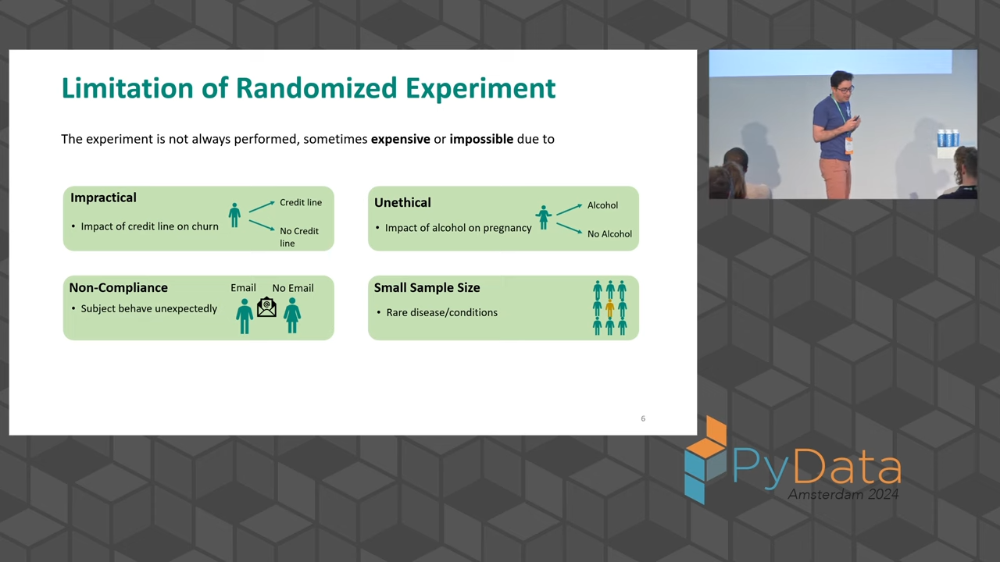
3. Practical Challenges
- Non-simultaneous contact: In reality, campaigns often target different groups at different times;
- Lack of proper control groups: When targeting specific customer segments, finding comparable control groups is difficult;
- No randomization: Business rules often determine who receives treatment, leading to selection bias.
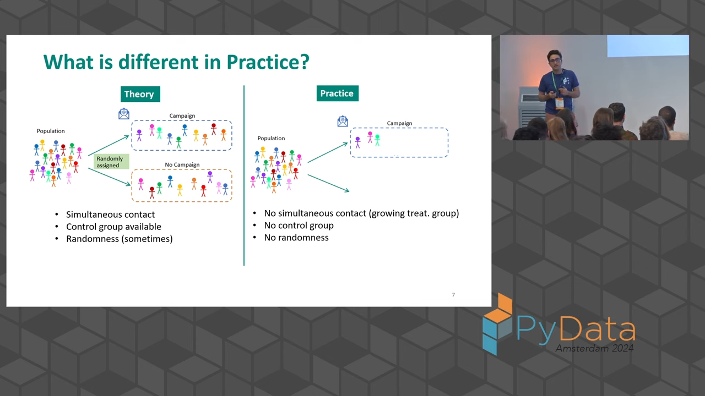
4. Solutions and Approaches
4.1. Handling Non-randomization
- Use propensity score modeling to mimic randomization;
- Account for confounding variables (like age, sex) that affect both treatment assignment and outcomes;
- Apply inverse probability weighting to correct for selection bias.
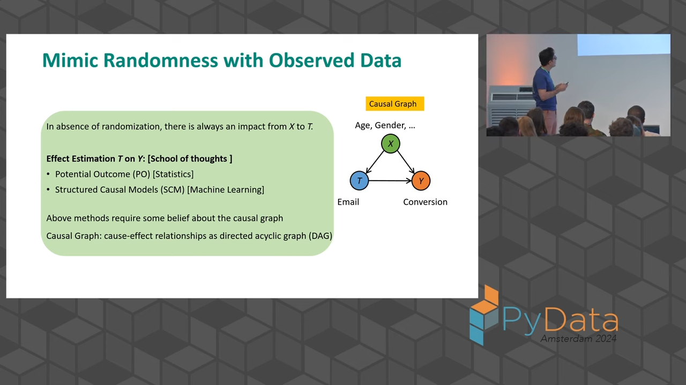
4.2. Control Group Selection
- Use rule-based methods to create comparable control groups;
- Apply the same filters used in campaign targeting;
- Consider similar products within the same category;
- Implement exclusion criteria to maintain non-interference and consistency;
- Ensure basic criteria matching (e.g., valid email addresses, opt-in status).
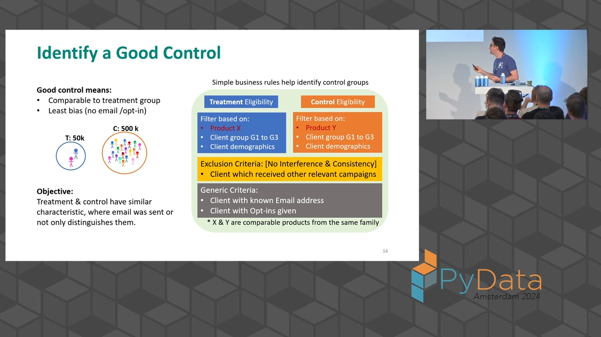
4.3. KPI Consideration
- Understand the propagation of effects through time:
- Short-term metrics (email opens, clicks);
- Mid-term metrics (product adoption);
- Long-term metrics (revenue generation);
- Consider data availability and measurement timing;
- Account for different variables affecting each level of metrics.
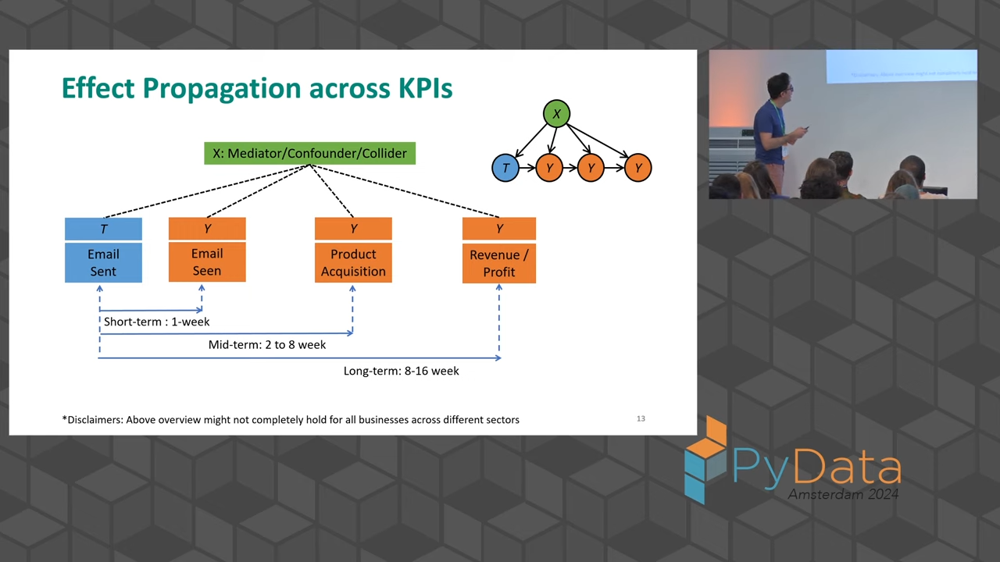
5. Theoretical Frameworks
The speaker discusses two main schools of thought:
5.1. Potential Outcomes Framework
- Focuses on treatment assignment mechanisms;
- Uses propensity scoring and inverse probability weighting;
- Simpler to implement in practice.
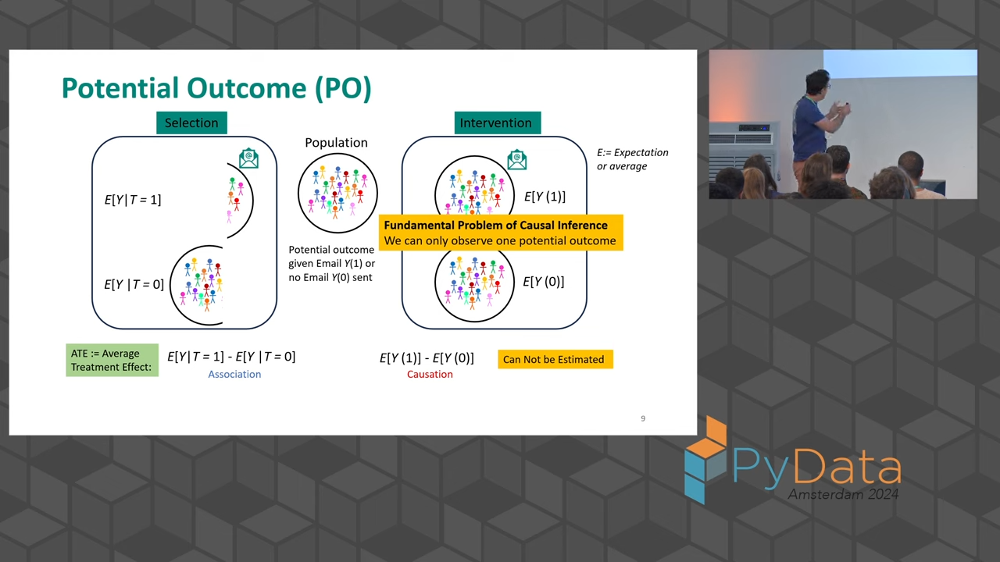
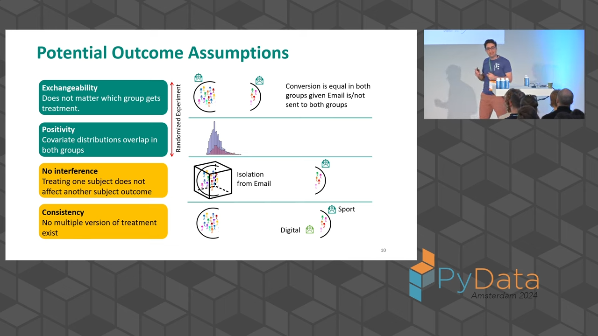
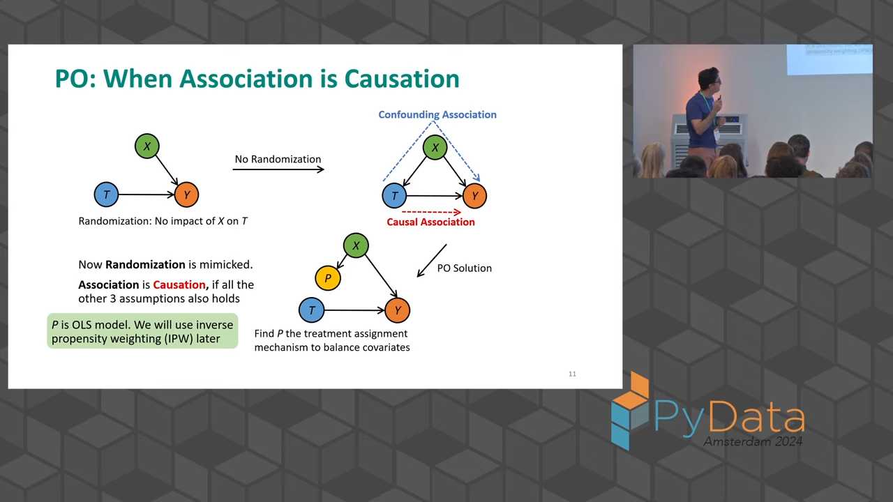
5.2. Structural Causal Models
- Based on causal graphs;
- Provides a more complete picture of relationships;
- Requires careful consideration of mediators, confounders, and colliders.
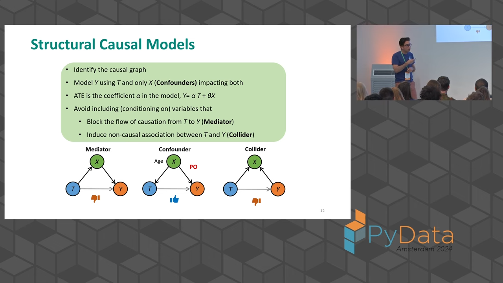
6. Practical Implementation Tips
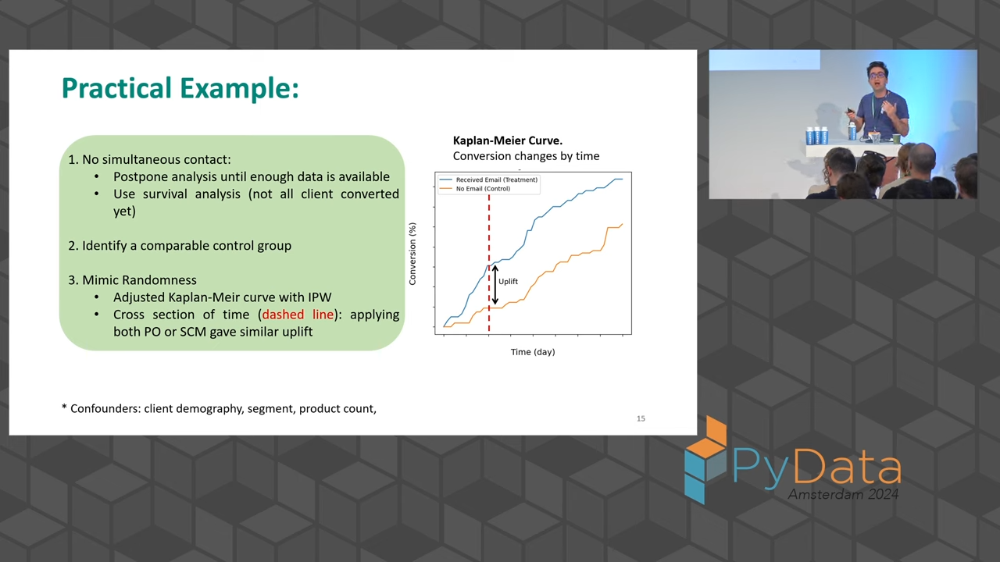
- Start with simple rule-based approaches before applying sophisticated models;
- Validate assumptions with domain experts;
- Consider multiple time horizons for effect measurement;
- Use survival analysis for handling time-varying outcomes;
- Apply multiple methods to validate results;
- Focus on business relevance rather than theoretical perfection.
7. Key Considerations for Success
- Ensure exchangeability between treatment and control groups;
- Maintain positivity (overlap in covariate distributions);
- Avoid interference between groups;
- Maintain consistency in treatment application;
- Consider both direct and indirect effects;
- Account for time-varying effects.
8. Evaluation Challenges
- Unlike simulated data, real-world applications lack known true effects;
- Recommend using multiple methods and comparing results;
- Validate findings with domain experts;
- Consider business context and practical significance.
9. Outtro
The speaker emphasizes that successful causal inference in practice requires:
- Balance between theoretical rigor and practical constraints;
- Understanding of business context and limitations;
- Use of simple, interpretable methods where appropriate;
- Careful consideration of data quality and availability;
- Collaboration with domain experts;
- Focus on business-relevant metrics and timeframes.
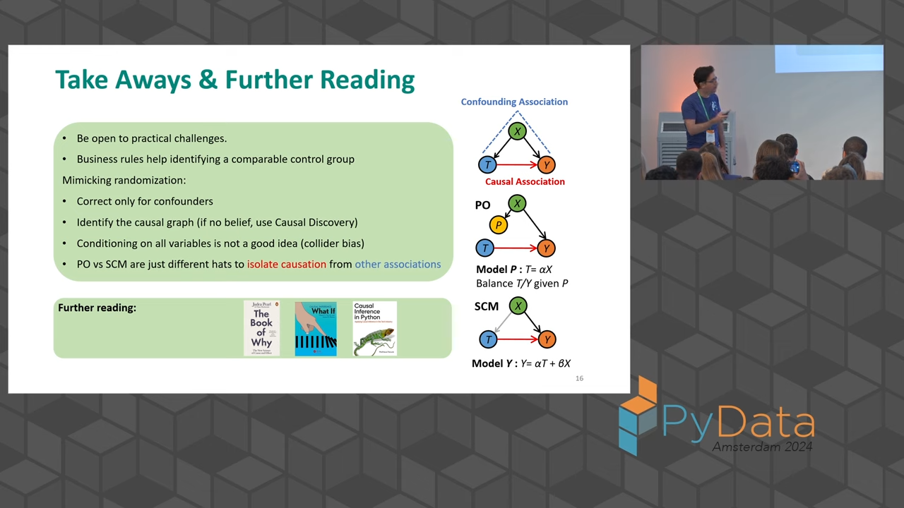
The speech concludes by highlighting that while causal inference in practice may not always match theoretical ideals, careful application of basic principles, combined with practical business understanding, can still provide valuable insights for decision-making.
Summary with the help of Claude 3.5 Sonnet. Happy exploring!